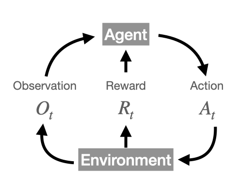

1 Overview
1.1 Agents, actions, observations, and rewards
The reward hypothesis states that all goals can be described by a maximization of expected cumulative reward.
- An
agentselectsactionsto maximizerewards - Actions can affect subsequent data
- In contrast to typical supervised and unsupervised learning, data is not treated as i.i.d at different time steps

Whether we assign time step \(t\) or \(t-1\) to observation \(O\) and reward \(R\) in relation to action \(A_t\) is a matter of convention. The convention indicated in caption of Figure 1.1 will be followed throughout.
1.2 History and State
History at time \(t\) is the set of all earlier observations, rewards and actions: \(H_t = \left\{ O_i, R_i, A_i \right\} \quad \forall \quad i \in \left[ 0, t \right]\). The next step depends on history.
State is a function of history \(S_t = f(H_t)\). Portions of state may be private to the environment. The environment state \(S_t^e\) specifies the next observation and reward, and can contain information irrelevant to the agent’s goals.
Agent state \(S_t^a\) is an internal representation that is accessed by the RL algorithm. This is also a function of history.
1.3 Markov state
\(S_t\) captures all history relevant for the next step (i.e. future), and so state is a sufficient statistic for the future.
The setting of a fully observable environment with markov states is formally referred to as a Markov Decision Process (MDP).
1.4 Partially Observable Markov Decision Process
Commonly abbreviated as POMDP. Here the agent must construct it’s own state representation \(S^a_t\). The role of this representation is to:
- capture history up to that time step \(H_t\)
- maintain beliefs about the environment, e.g. \(S^a_t = (P[S_t^e=s^1], ... P[S_t^e=s^n])\)
One implementation is using recurrent neural networks, as \(S_t^a = \sigma(S_{t-1}^aW_s+O_tW_o)\) where, \(W_s\), \(W_o\) are learned network weights, and \(\sigma\) is some nonlinearity.
1.5 RL agents
Agents consist of one or more of the following:
Policy: specifies behaviourValue function: evaluation of states and/or actionsModel: representation of the environment
Policy
The policy function \(\pi\) maps states to actions. It can be deterministic a = or stochastic \(\pi(a|s) = P[A=a|S=s]\)
Value function
Defined for a policy attached to a given state \(s\) at time step \(t\):
\[v_{\pi}(s)=\mathbb{E}_{\pi}[R_t + \gamma R_{t+1} + \gamma^2 R_{t+2} + ... | S_t=s]\]
Model
The model predicts the environment. Since the environment (see Figure 1.1) determines the next state (observation) and reward, the model:
- maintains a state transition probability: \(\mathcal{P}_{ss'}^a = P[S'=s'|S=s,A=a]\)
- evaluates reward: \(\mathcal{R}_s^a = \mathbb{E}[R|S=s,A=a]\)
1.6 Categorizing RL agents and problems
Agents
- Value based: explicit value function, but implicit policy (derived from value function)
- Policy based: explicit policy function, but no value function
- Actor critic: combination of Value- and Policy-based agents
- Model free: policy and/or value function, but no model of environment
- Model based: policy and/or value function, with model of environment
See OpenAI (2020) for a taxonomy of problems in RL, and an implementation focussed approach to RL.
Problems
- RL: environment is initially completely unknown, agent interacts with environment and updates policy
- Planning: environment is fully known, agent calculates value and updates policy (e.g. tree search)
- Explore/exploit: exploring involves obtaining information about the environment, exploiting involves using that information to maximize reward. Here the agent should discover a good policy through interaction with the environment while minimizing loss of reward.
The main steps in these problems involve
- Prediction: evaluate future, given a policy
- Control: find best policy, optimize for the future